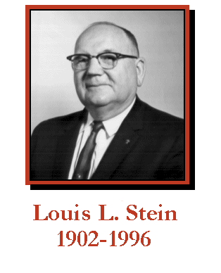

Those of us who are fortunate enough to have known Louis Stein are well aware of the unsurpassed role he played in the preservation of local history. Those who have never heard of him are unknowingly but no less indebted to him for his ceaseless efforts to document the past.
A visit to Louis and Millie's home was an experience to remember and treasure. History was virtually everywhere. His immense attic was crammed with documents. The basement was stuffed with more material. The double garage was lined with huge ledgers. A wonderful horse-drawn streetcar which he had bought to prevent its demise and for which he built a substantial structure in the backyard was forced to share space with uncounted boxes of documents.
Louis was born and raised in Berkeley. In 1924 he earned a degree from the University of California's School of Pharmacy. In 1928, a year after his marriage to Mildred, he opened a pharmacy in Kensington.
Although he had followed his father's advice to go into business, Louis' passion for history was only dormant. His young son's interest in railroads led Louis to begin collecting railroadiana. Soon he embarked on a lifelong crusade to collect everything he could find relating to local history. He collected letters, diaries manuscripts, photographs, maps, newspapers, published works, and artifacts, often rescuing materials destined for destruction. On a grander scale, in 1953, he bought the Martinez Adobe to save it from being razed.
Throughout his life, Louis shared both his knowledge and his collections with anyone seeking information about local history. In time, he donated materials to appropriate institutions where they would be preserved and enjoyed by wider audiences. In 1956, he established the Pharmacy Museum at Columbia State Park. His vast railroad collection went to the California State Railroad Museum in Sacramento.
In the early 1980s the Steins decided to donate their considerable materials relating to Contra Costa County to the Contra Costa County Historical Society. These manuscripts, documents, maps, photographs, newspapers, and ephemera are now in the History Center in Pleasant Hill.
The Stein Collection is the very heart of the History Center, an extraordinary repository which has become a widely-used, growing, and indespensible source for the study of the County's history. Without the Stein Collection, the History Center would not exist as we know it. Perhaps it would not exist at all.